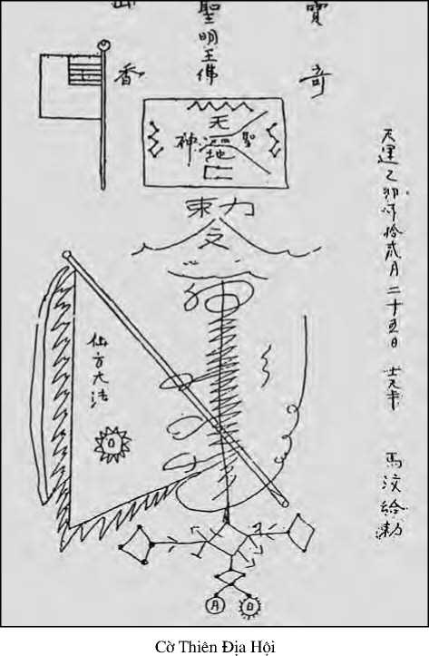
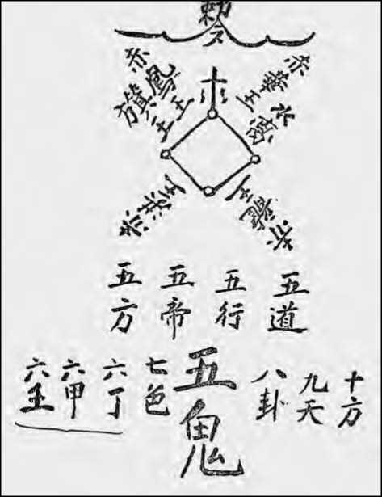

Không nên tin ai cả!
Không nên tin cậy!
Chỉ tin cậy nơi sức lực của mình!
Ret Marut * (B.Traven)
Chiến thắng của ‘’dân tộc anh hùng’’ -chiến thắng nào vậy?- là một cuộc chiến Đông Dương nằm trong khung cảnh chiến tranh nguội giữa hai khối đế quốc Nga-Tàu và Mỹ. Nếu không có vũ khí của Nga, và trợ giúp của Trung Hoa về cố vấn và đại bác và lương thực thì Điện Biên Phủ là điều không thể quan niệm được, cũng như sự ‘’thất bại’’ của đế quốc Hoa Kỳ ở thời kỳ sau đó.
Sau ‘’chiến thắng’’ này, phải chăng người Việt đã vạch rõ lời tiên đoán của Pierre Hecbart là sai lầm: ‘’Trong cuộc chiến đấu mơ hồ này, họ đã đắc thắng, nghĩa là họ đã loại trừ được những ông chủ ngoại quốc và chọn trong hàng ngũ của họ những ông chủ mới - và thay thầy đổi chủ’’. (202)
Không thế, họ còn chứng minh đều Hecbart tiên đoán là đúng, mà thậm chí họ không có quyền chọn lựa những ông chủ mới của họ.
Còn đối với chủ nghĩa anh hùng mà hiểu ngầm là sự tự do chọn lựa cá nhân, nó có quan hệ gì đến cái ‘’dân tộc nhỏ bé’’ đưa tới chỗ chết hàng lớp bất tận tại Điện Biên Phủ? Người ta liên tưởng đến câu nói của Isaac Babel ghi trong cuốn Nhật Ký năm 1920 của mình: ‘’những kẻ khốn khổ đó thật đáng thương, không còn là những con người nữa mà là hàng hàng lớp lớp’’.
Quả thực, đảng của Hồ chí Minh đã giành được thắng lợi trong chiến tranh, nhưng nhân dân Việt Nam phải chăng là đã giành được cái chi khác hơn là cái ách nô dịch, như câu nói của La Boétie.
Hằng hà sa số nông dân đã hy sinh đưa đảng theo xu hướng Stalin lên nắm chính quyền, đã tự buộc mình đóng góp khủng khiếp về số người chết và đau khổ, để rồi rốt cuộc bị đẳng cấp quan liêu quốc gia sắp sếp thành đội ngũ nô lệ, như một lực lượng cần thiết trong quá trình tích lũy nguyên thủy nền tư bản Nhà Nước quan liêu, phục vụ lợi quyền riêng một tầng lớp người lũng đoạn kiểu mới.
Còn đối với nền ‘’độc lập dân tộc’’ thì trên thực tế là một sự lệ thuộc: Trở thành một vệ tinh của đế quốc giả danh Sô-viết, đất nước này đã bị gia nhập vào cuộc đối đầu của hai quốc gia lớn theo chế độ Đảng-Nhà Nước ‘’cộng sản’’ để giành quyền bá chủ ở Đông Nam Á: Quân đội ‘’cộng sản’’ đông đúc của xứ này, được Nga viện trợ, đã đánh đuổi Pol Pot ‘’cộng sản’’ do Tàu bảo trợ, và chiếm đóng xứ Khmer trong mươi năm (1979-1989).
Đẳng cấp quan liêu Việt Nam, cái đẳng cấp mới này (hay giai cấp hoặc quả đầu chính thể) thống quản chế độ tự gọi là ‘’Cộng Hòa Xã Hội Chủ Nghĩa Việt Nam’’, xuất thân từ ‘’tầng lớp trung lưu có học’’ trở thành chủ tể một hệ thống Đảng-Nhà Nước có tôn ti trật tự, họ chỉ là một lớp người thay thế tầng lớp tư sản và địa chủ trước kia trong công việc bóc lột vô sản và nông dân, một ‘’đẳng cấp đặc quyền đặc lợi chủ yếu theo dõi mục đích cao lương lớn chức’’ (203).
Ngày nay giai cấp thợ thuyền vẫn còn thiểu số, đẳng cấp quan liêu mới sử dụng quyền độc đoán đối với người sản xuất, là những người chưa bao giờ có quyền sở hữu tập thể về các phương tiện sản xuất, cũng chẳng có thời giờ rảnh rang để suy nghĩ, không được quyền quyết định, quyền phát biểu ý kiến riêng, cũng không có quyền bãi công. Trật tự quan liêu với bộ máy đàn áp công an-quân đội, ngự trị trên tình trạng đói nghèo và bất công xã hội, càng ngày càng thêm hiển hiện.
Trong hồi ký Đêm giữa ban ngày, nhà văn Vũ Thư Hiên viết:
Cuộc cách mạng giải phóng dân tộc đã thành công rực rỡ trong sự thay thế những ông chủ da trắng bằng những ông chủ da vàng. Cái khác là cách cai trị của những ông chủ mới tinh tế hơn những ông chủ cũ nhiều.
Mọi sự bóc lột, đè nén giờ đây được tiến hành trong tiến kèn hoan hỉ ngợi ca cuộc đời mới, trong cờ xí rợp trời, trong ánh lấp lánh của vàng mạ phủ lên mọi tối tăm, tủi nhục, tiếng riều đao phủ chìm nghim trong khúc quân hành, và đám đông bị mê mẩn bởi những lời cổ vũ hùng hồn rầm rập kéo nhau đi tới miền đất hứa ở tít mù tầm mắt không nhận thấy máu đồng bào nhơm nhớp dưới chân mình. (204)
Từ tháng 3 năm 1956, sau khi Khrouchtchev báo cáo về những tội ác của Stalin, một vài thi sĩ văn nhân, bạo dạn lên tiếng để phá vỡ tình trạng đồng tình ngoài mặt. Họ công kích bọn ‘’cặp rằng văn chương và nghệ thuật’’, trong văn từ xuất bản, họ mạnh bạo đòi hỏi quyền tự do dân chủ, phản đối chế độ kiểm soát nhân dân bằng cách tập họp thành từng đơn vị gồm hộ khẩu tự phải kiểm soát lẫn nhau. (chế độ nầy đã thực hiện thời Tần Thủy Hoàng 221-206 trước công nguyên). Họ chỉ trích lạm quyền, độc đoán và hà lạm trong cuộc cải cách điền địa đương tiến hành, những điều ấy làm dân chúng đang nổi lên phản đối hàng loạt...Chính quyền thấy mình bị trào lộng bỉ khinh bèn bóp ngộp cuộc vận động Trăm hoa đua nở mùa xuân và mùa hạ: Ngày 15 tháng chạp năm 1956, Hồ chí Minh ký sắc lệnh cấm mọi việc in ấn phát hành sách báo đối lập, những kẻ phạm sẽ bị phạt tù có thể đưa đến khổ sai chung thân (205).
Vào tháng 11 năm 1956 nông dân nổi loạn nghiêm trọng ở Nghệ An làm rung động trật tự quan liêu, nguyên nhân cải cách ruộng đất bất công do quyết định độc đoán: 15.000 người vô tội bị hành hình - theo báo cáo của bộ công an năm 1956, tìm lại được trong kho lưu trữ ở Hà Nội năm 1961 - vậy tính cứ trung bình mỗi làng có 5 người bị hành hình, trong số 3.014 làng có cải cách ruộng đất. Ước tính tổng số người bị chết bắn lên tới khoảng bốn năm vạn. Số nông dân bị bắt giam hoặc lưu đầy chắc chắn là vượt quá số lượng trên (206).
Năm 1975, sau khi bộ đội đất Bắc nhập Sài Gòn, chủ tể Hà Nội tổ chức Nam bộ theo thể chế ‘’xã hội chủ nghĩa’’ đã thiết lập ở Bắc từ 1954. Dân chúng quần tụ thành khóm đơn vị hộ khẩu, buộc phải kiểm soát lẫn nhau. Đỗ Mười cầm đầu tập đoàn gồm cán bộ bộ đội cùng công an từ Hà Nội vào cấp tốc phát động chiến dịch cải tạo tư bản mại bản kết xù (ám danh ‘’chính sách X1’’) tịch thâu tài sản bọn Tàu chủ thầu lúa gạo, hóa chất, thiếc sắt..., tập thể hóa sản nghiệp kỹ nghệ, thương mại, thủ công của tư bản bản xứ nhóp nhen phát triển thời Mỹ, giao các cán bộ phần đông ở Bắc vào quản lý. Bất khả năng tổ chức sinh sản, tham nhũng, hà lạm, tước đoạt của công, gây nên một tình thế kinh tế hỗn loạn ở Nam bộ gần hai mươi năm. Ai cũng còn nhớ Hoa kiều bôn tẩu hằng ngàn, thuyền nhân vượt biển vô số kể từ thuở đó.
Dân thợ, dân cày, cu-li sống bằng hai cánh tay, tận cùng khốn khổ. Bốn chữ tắt XHCN (Xã hội chủ nghĩa), người ta đọc Xếp hàng cả ngày, tưởng tượng đến hàng người trước Sở Bưu Điện đợi lãnh những gói y dược, vật thực, áo quần của bà con tỵ nạn ở Âu Châu, Mỹ Châu gởi về, số gói hạn chế ghi trong một quyển sổ tay.
Năm 1976, khởi cải tạo tư sản nông thôn, phân chia ruộng đất quốc hữu hóa cho dân cày nghèo và dân không có đất. Cán bộ thừa cơ giành lấy cho mình hoặc cho bà con những mảnh đất tốt, những thửa ruộng phì nhiêu, trở nên lớp cường hào mới ở nông thôn. Hai năm sau, chính quyền quan liêu bắt đầu tập thể hóa nông thôn, cưỡng bách dân cày nộp miếng đất khoảnh ruộng của họ, trâu bò, cày bừa vào hợp tác xã để tham gia tập đoàn sản xuất, và công cuộc cải tạo phải hoàn tất năm 1980 trong toàn Nam bộ.
Dân cày trái ý trở thành công nhật, làm lụng theo lịnh cán bộ chỉ huy, kiểm soát hợp tác xã. Ban thơ lại quản trị quá đông, gồm người trong đảng, hoặc thuộc tổ chức thanh niên, phụ nữ...cùng đương nhiệm ủy ban nhân dân làng, vô số kẻ ăn bám quỹ hợp tác xã, họ tự túc phần lớn sản phẩm.
Dân cày bực tức, làm thịt trâu bò, sau đó nhiều nơi đàn bà phải thay trâu kéo cày. Lúa gạo sản xuất kém cõi, nạn đói đe dọa.
Ngày 21 tháng chạp năm 1986, báo Nhân Dân, cơ quan của Đảng Cộng Sản, đăng tải lời tuyên bố của Dương quang Đông, một đảng viên ở miền Nam tham gia từ năm 1930:
Từ mười một năm nay, đảng tỏ ra không có khả năng cung cấp cho dân một hạt gạo nào, một miếng thịt nào, một giọt nước mắm nào; và cũng không có khả năng ổn định về giá cả. Dân khổ quá. Biện pháp tốt nhất là đảng nên để cho dân được tự do sản xuất, tự do sinh sống, tự do học hành.
Qua 1986-1987, nông dân được lấy đất lại, tự cày cấy rồi trả địa tô cùng thuế điền thổ. Ruộng đất thuộc về Nhà Nước cho nông dân thuê dài hạn và được quyền chuyển sang lại cho con cháu.
Tháng tám 1988, 300 nông dân vùng châu thổ sông Cửu Long lên tận Sài Gòn biểu tình ba ngày để phản đối bọn cường hào tước đoạt, khiếu nại những vụ ngang tàng bắt bớ cùng đòi quyền tự do ra khỏi hợp tác xã cùng tập đoàn sản xuất.
Cũng lúc đó, 30 người đánh cá biển ở mũi Cà mau lên Sài Gòn, phản đối hợp tác hóa cưỡng bức. Lối sáu chục người chài xã Chí Công bị buộc nộp ghe máy của họ vào hợp tác xã tham gia chài cá tập thể. Người ta sung công ghe những ai không khứng. Một vài người cứng đầu bị bỏ tù, ghe của họ bị đoạt. Một anh chài cương ngạnh bị nhốt tám tháng trong trại giam ở Phan Thiết vì tội chống hợp tác hóa, v.v...Dân chài báo tới Trung ương đảng ngoài Bắc. Hà Nội phái người đến tận nơi điều tra. Khi họ quay lưng, tên Nguyễn Hoàng Thái Vinh, phó chủ tịch Huyện Tuy Phong nói với dân chài: Các người kiện lên trung ương thì cũng như mèo quào vách đất! (Nhân Dân 1.10.1988).
Tình cảnh cùng quẫn ngoài xã hội đã đến mức làm cho công cuộc phê bình nội bộ trong đảng phải bộc lộ ra bên ngoài.
Năm 1989, Lê quang Đạo, ủy viên trung ương Đảng, và là chủ tịch quốc hội, tuyên bố:
Nền chuyên chính của Đảng thay vào nền chuyên chính của toàn dân lao động; kết quả là hình thành một chế độ độc tài dựa trên những đặc quyền đặc lợi, một chế độ có nhiều bất công trong xã hội thúc đẩy người dân nổi loạn (207).
Thế thì Đảng-Nhà Nước, tự gọi xã hội chủ nghĩa, trong tay một tầng lớp người lũng đoạn kiểu mới, là bộ máy thống trị và chế ngự nô dịch giai cấp vô sản và nông dân. Những người bị áp bức toan tự giải phóng chỉ phải công kích đẳng cấp quan liêu ấy, hiện diện khắp cùng, phải thủ tiêu bộ máy Nhà Nước ấy. Không khi nào một bộ máy Nhà Nước tự nó băng hoại, tự giải tán quân đội, cảnh sát mật thám, tự phá ngục tù, hủy luật pháp, chính thể chế định của nó. Hôm qua như ngày hôm nay, Nhà Nước là lợi khí thuần túy của một giai cấp thống quản chế ngự một giai cấp khác, không thể khác được. ‘’Ngày nào Nhà Nước còn tồn tại thì chế độ nô lệ vẫn còn tồn tại. (Karl Marx).
Cuối năm 1991, Bùi Tín, chủ bút báo Nhân Dân, cơ quan chính quyền, có nhiệm vụ sang Paris vào tháng 11, đã đoạn tuyệt với chính phủ Hà Nội. Y là người đã chứng kiến cuộc khủng hoảng về chính trị và kinh tế trong xứ:
Hiện tình của đất nước làm cho mỗi người dân phải lo lắng. Thói tục quan liêu, tính vô trách nhiệm, tính ích kỷ, sự thái hóa biến chất, tình trạng gian lận lan rộng dưới một chế độ cửa quyền của những kẻ đặc quyền đặc lợi.
Cái ăn sâu cắm rễ nặng nề trong Đảng Cộng Sản Việt Nam đó là chủ nghĩa Stalin và chủ nghĩa Mao, vừa mang tính chất phong kiến vừa mang tính chất nông dân, duy tâm, gia trưởng và độc đoán, rất bảo thủ và thái hóa, hoàn toàn xa lạ với tư tưởng dân chủ. (208) (Tư tưởng dân chủ nào vậy?).
Gần đây vào tháng 10 năm 1991, Bảo Ninh xuất bản ở Hà Nội quyển Nỗi buồn chiến tranh: Anh khêu gợi tấm thảm kịch ghê tởm anh đã sống từ năm 1959 đến 1975 trong tiểu đoàn 27 cho đến lúc lấy Sài Gòn, lúc ấy chỉ còn sống sót mười người trong số năm trăm.
Những người được sống vẫn sống song những khát vọng nồng cháy từng là cứu cánh của cả một thời, từng soi rọi cho chúng tôi dùng lịch sử, thiên chức và vận hội của thế hệ mình, rủi thay đã không thành ngay hiện thực cùng với thắng lợi của cuộc kháng chiến như chúng tôi đã hằng tưởng. Đến bây giờ, lúc này đây, bạn hãy xem thực chất quanh ta có gì khác hơn ngoài cuộc sống tầm thường và thô bạo của thời hậu chiến? Nền hòa bình này...Hừ hình như tôi thấy các mặt nạ người ta đeo trong những năm trước rơi hết. Mặt thật bầy ra gớm chết. Bao nhiêu xương máu đã đổ ra...
Nếu người kể chuyện không phỉ báng cuộc chiến tranh, nghĩ rằng ‘’không chiến tranh thì không có hòa bình’’, trước ‘’nạn đào ngũ lan rộng khắp trung đoàn,...làm ruỗng nhiều trung đội, không thể chấn giữ, ngăn bắt nổi’’, anh cũng không thóa mạ người bạn đào ngũ, người này chống quan niệm anh hùng, và bày giải thái dộ của mình trước khi bỏ chiến.
Tôi không sợ chết, nhưng cứ bắn mãi giết mãi thế này thì chết hoại tính người. Anh còn nhớ trên Pleiku năm 1972 không, có nhớ cảnh thây người la liệt trong khu gia binh không? Máu tới bụng chân lội lõm bõm...Mình vào đây làm gì khi để mẹ già ở nhà cơ cực, không nơi nương tựa, ngày đêm than khóc nhớ con. Mẹ tôi cứ van tôi tìm cách mà trốn...Bao thằng khốn nạn ung dung hưởng lộc chiến tranh chỉ con cái nông dân là dứt lòng ra đi bỏ lại đằng sau cảnh mẹ già màn trời chiếu đất...Thắng hay thua, kết thúc mau hay kết thúc chậm, với tôi chẳng nghĩa lý gì nữa. Sát, thì tôi đã sát quá nhiều rồi...Còn nhục? Cả đời đi đánh nhau, thú thực, tôi chả thấy cái trò này là vinh.
Viện trợ của Nga (dầu hỏa, thép, phân bón, vải vóc...) cạn kiệt, viện trợ của Tàu chỉ có được nếu chịu phục tùng. Đẳng cấp quan liêu kêu cứu với tư bản nước ngoài, ban bố chính sách ‘’đổi mới’’, ‘’kinh tế thị trường, theo định hướng xã hội chủ nghĩa’’, để hiệp tác với bọn đầu tư ngoại quốc và chia lợi tức với chúng. Xứ sở ‘’độc lập’’ đón tiếp đế quốc chủ nghĩa kinh tế, trở thành một thị trường mênh mông cho sản phẩm kỹ nghệ đế quốc, một bầu chứa đông đảo nhân công rẻ tiền và nguồn nguyên liệu dồi dào.
Các cựu đế quốc Pháp Nhật Mỹ mang tiền trở lại, bọn lý tài Nam Hàn, Đài Loan, Mã Lai, Hong Kong...ào đến đầu tư, cấu kết với đẳng cấp quan liêu trong xứ những hợp đồng joint venture, mục đích một bên nhằm bóc lột nhân công rẻ mạt, còn bên kia, Đảng-Nhà Nước kích động quá trình công nghiệp hóa theo con đường tư bản chủ nghĩa, cơ sở chế độ tư bản Nhà Nước quan liêu. ‘’Người ta không chinh phuc nữa, người ta bóc lột. Người ta đánh đuổi binh lính, đối với bọn con buôn thì không thế’’. (On ne conquiert plus aujourd'hui, on exploite. On repousse des soldats, pas des marchands. Roland Dorgelès). (209)
Trong Nam, từ cuối tháng chạp 1992, thợ thuyền tự động bãi công chống đối bọn chủ Nam Hàn, Đài Loan, chẳng những để đòi tăng đồng lương quá kém bớt giờ làm, cùng để kháng cự trừng phạt bạo tàn hạ nhục. Bọn chủ miệt thị thể chế ngày làm 8 giờ, khinh thường hiệp đồng ký kết với quan liêu. Cả vài trăm cuộc đình công tự động ào ạt lung tung khoảng 1995-1996.
Khởi đầu hợp đồng cùng bọn tư bản Đài Loan, khu công nghiệp Tân Thuận (Sài Gòn 1991) được xây dựng theo chỉ thị của chúng để làm mẩu kêu cầu ngoại quốc đầu tư, với nhiều triển vọng bóc lột nhân công rẻ tiền. Chủ tịch khu đại diện Đảng-Nhà Nước cũng vừa là người trong ban chỉ huy tổng công đoàn lao động thành phố Hồ chí Minh. Đến 1997, hoặc hợp đồng tư bản, hoặc chỉ kiến thiết với vốn ngoại quốc đầu tư, trong toàn xứ mọc lên từ Bắc chí Nam 41 khu công nghiệp tương đương, bóc lột 350 000 công nhân. Khu Đà Lạt hiệp đồng với tư bản Ma Lay, Khu Hải Phòng, Nomura-Haiphong Industrial, dưới quyền tư bản tài chính Nhật.
Năm 1997, trên 2000 công nhân làm reo trong các khu công nghiệp. (210)
Bộ luật lao động mới ban hành năm 1995 thừa nhận quyền bãi công. Nhưng các xí nghiệp ngoại quốc chỉ thực hiện những điều khoản về kỷ luật cùng về đàn áp nhân công. Vả lại, Bộ lao động cùng tổng liên đoàn lao động cho là phi pháp những cuộc tự động đình công. Trước khi bãi công dân thợ phải tùy đại biểu liên đoàn ưng thuận, sau khi họ can thiệp thương lượng thầm kín với bọn chủ. Và bãi công thế nào không làm ngưng trệ các sản nghiệp nhà nước. Lê văn Hồng, phó chủ tịch tổng liên đoàn lao động ở Sài Gòn nói với phóng viên báo Libération (Paris 17.5.1996) ‘’Thợ có nhiều yêu sách đòi hỏi, song những người đầu tư họ cũng có quyền của họ. Vì quyền lợi của đôi bên, mỗi bên phải nhựợng bộ. Với một số lương tháng tối thiểu là 35 đôla, Việt Nam cũng đã không cạnh tranh nổi với Tàu hoặc Miến Điện kia mà!’’
Cứu thân mình chỉ tay mình thôi!
Tình thế nông dân có gì đổi mới?
Khoảng Tết năm Con Trâu 1997, độ 500 nông dân hai làng Uy Nổ và Kim Nổ gần Cổ Loa kháng cự đoàn xe bulldozers Nam Hàn Daewoo xâm nhập vào cánh đồng trồng bắp toan dọn dẹp để bày bố một sân đánh banh golf. Phần đông cựu kháng chiến, họ cầm dao gậy cùng là cung nỏ, lấy căm xe đạp nhúng thuốc độc làm tên. Họ thiêu hủy một Tracteur và hai bulldozers. Cảnh sát đàn áp bằng dùi cui và hơi độc làm chảy nước mắt. (Dường như một số cảnh sát chối từ đàn áp, gốc rễ họ ở nông thôn). Rốt cuộc phía cảnh sát một vài người chết.
Tháng 5.1997, ở Thái Bình, 3000 nông dân ở 33 xã kéo đến trung tâm tỉnh lỵ biểu tình chống tăng thuế, chống cán bộ sở tại tham nhũng xa hoa. Năm ba người vong mạng trong các cuộc biểu tình tháng năm tháng sáu; Qua tháng 8, vùng nầy sôi nổi lại. Đương đầu hàng trăm lính cảnh sát do Hà Nội xua đến đàn áp, dân biểu tình giật hai con chó cảnh sát, đốt nhà một cán bộ. Trong 52 xã, dân làng lật đổ chính quyền sở tại và tự quản lý việc làng. Báo Nhân Dân ngày 8.9.1997 nhìn nhận rằng 128 làng phản đối tăng thuế.
Dù đứng trước bất kỳ vấn đề gì mà ta phải đối chiếu, từ nay chúng ta đều biết rằng cái gọi là ‘’chủ nghĩa cộng sản’’, ở Việt Nam cũng như ở Liên Sô, Trung Quốc và các nước cùng phe, chỉ là một chế độ ngụy tạo bạo ác và buồn chán, một chế độ tư bản nhà nước quan liêu, một loại ngáo ộp về chính trị-kinh tế phục vụ quyền lợi cho một đẳng cấp quan liêu tham lam và trắng trợn. Chống dùng những lời hô hào xã hội chủ nghĩa, cộng sản chủ nghĩa giả trá để che đậy những xiềng xích nô dịch mới trói buộc vô sản nông dân.
Hơn hai ngàn năm trăm năm trước, Lão Tử trong Đạo Đức Kinh đã lên tiếng phản đối tính chất hư giả của ngôn ngữ người đồng thời như sau:
‘’Danh khả danh, phi thường danh’’ (những từ ngữ thường dùng không diễn đạt được sự thực) và Khổng Tử, trong Luận Ngữ, đã căn dặn đệ tử phải ‘’sửa cho đúng cái tên gọi’’ (Chính danh), để loại bỏ những từ ngữ mập mờ lừa phỉnh. Ngôn ngữ chính trị ngày nay thật đầy dẫy những bóng gió phỉnh phờ. Không biết do một sự sai lạc nào mà một số sử gia lại sử dụng cái cụm từ ‘’chủ nghĩa cộng sản quốc gia’’ áp dụng cho cái chế độ bất công và buồn tẻ do Hồ chí Minh xây dựng nên?
Chưa có một nơi nào trên thế giới và trong thế kỷ này đã tìm ra con đường thực thi cái ‘’lý thuyết không tưởng’’ của Karl Marx, nhằm tạo điều kiện thuận lợi cho mỗi người được khai tâm phát triển và mở mang một xã hội hợp lý toàn thế giới, không giai cấp, không có chủ nghĩa tư bản, không có chế độ làm mướn và do đó không có người bóc lột người, không còn Nhà Nước và cũng chẳng có những mâu thuẫn đối kháng giữa các quốc gia. Chủ nghĩa quốc gia độc đoán, dẫy đầy áp bức, vu khống và ám sát theo lời Stalin, chỉ làm bại hoại chân tướng lý thuyết Karl Marx, làm cho người ta hiểu sai lạc đi.
Các chế độ tự xưng xã hội chủ nghĩa nào có gì tương tự với một xã hội đại đồng như Karl Marx khái niệm
‘’Một sự hiệp đồng trong đó sự tự do phát triển của mỗi người là điều kiện cho sự tự do phát triển của mọi người ‘’, một sự tập hợp những con người tự do lao động với những tư liệu sản xuất chung và, theo một kế hoạch được thảo luận chung, dồn những nỗ lực cá nhân tạo thành một lực lượng sản xuất xã hội duy nhất. Tổng sản phẩm của những người lao động hợp nhất lại thành một sản phẩm xã hội. Một phần của sản phẩm xã hội được tái sử dụng làm tư liệu sản xuất và mang tính chất xã hội, còn phần khác để tiêu thụ, và do đó, phải được phân phối đều cho mọi người. Phương thức sản xuất sẽ thay đổi tùy theo cơ chế tổ chức sản xuất của xã hội và trình độ phát triển lịch sử của những người lao động. Chẳng hạn, chỉ để so sánh với sự sản xuất có tính chất buôn bán, phần được chia cho mỗi người lao động là tùy theo thời gian lao động của người đó, như vậy thời gian lao động đóng một vai trò kép. Một mặt, sự phân phối thời gian lao «ộng trong xã hội điều chỉnh mối tương quan chính xác những chức năng khác nhau vào những nhu cầu khác nhau; mặt khác, nó dùng để đo cái phần cá nhân mỗi người sản xuất đóng góp vào công việc làm chung, và đồng thời để tính cái phần mà cá nhân đó được hưởng trong bộ phần sản phẩm chung dành cho tiêu thụ. Mối quan hệ xã hội giữa người và người trong công cuộc của họ sản xuất và đối với những sản phẩm hữu ích do lao động làm ra, ở đây vẫn đơn giản và rõ ràng trong lãnh vực sản xuất cũng như trong việc phân phối (211).
Hai chữ ‘’không tưởng’’ trên đây có ý nghĩa những triển vọng biến đổi xã hội chưa thực hiện được chứ không phải không thể thực hiện. Và chỉ thực hiện được khi nào giai cấp nô lệ ngày nay không quên lời tiên tri của Karl Marx: ‘’Ngày nào Nhà Nước còn tồn tại thì chế độ nô lệ vẫn còn tồn tại’’ (212).
Bức tường Berlin sụp đổ, chính thể được gọi là Liên Bang Cộng Hòa Xã Hội Chủ Nghĩa Sô Viết tan vỡ. Hạng trí thức tôi tớ tư bản tự do (capitalisme libéral) múa bút ó lên: Chủ nghĩa cộng sản đã chết! Các chế độ tư bản nhà nước quan liêu bên kia bức màn sắt tục gọi ‘’xã hội chủ nghĩa thực hiện’’ (socialisme réel) ‘’thực sự không có gì là xã hội chủ nghĩa cả’’ (213) đừng nói chi đến cộng sản chủ nghĩa. Rồi bầy chó giữ nhà tư bản tiếp tục ào ạt công bố Karl Marx tắt thở lần thứ hai! ‘’Nếu tôi muốn cải chính tất cả mọi điều mà người ta đã nói và viết về tôi, thì tôi phải thu dụng hai mươi người thơ ký’’, Karl Marx đã viết như thế trong tờ Chicago Tribune, ngày 5 tháng giêng 1879.
Trở lại xứ Việt, Hồ chí Minh, người luôn luôn bao giờ cũng xưng mình môn đệ Karl Marx, thật ra trước sau chỉ theo những chỉ thị của bộ máy quan liêu ở Moscou, con đường do thầy Stalin vạch ra, thậm chí cả trong từng chi tiết khốn nàn hèn mọn.
Trong những năm 40, Hồ đã để cho mọi người gọi mình ‘’Bác Hồ’’ (không phải là một ông chú ông bác nào, mà là anh của bố), đã ký ‘’Bác Hồ’’ trong những tờ truyền đơn gửi cho nông dân và binh lính, cái tên gọi khéo léo đó, trong một xã hội theo truyền thống nho giáo đã tỏa ánh hào quang như của một vị thần hộ mệnh.
Nắm chính quyền ở Hà Nội năm 55 tuổi, Hồ tự xưng ‘’Cha Hồ’’. Trong tiểu sử tự viết nhưng ký tên là Trần dân Tiên Những mẩu chuyện về đời hoạt động của Hồ Chủ Tịch, một tác phẩm tự sùng bái vô song, ta đọc:
Chủ Tịch Hồ chí Minh không muốn nhắc lại thân thế của mình (trang 5). Một người như Hồ Chủ Tịch của chúng ta, với đức khiêm tốn nhường ấy và đương lúc bề bộn bao nhiêu công việc, làm sao có thể kể lại cho tôi nghe bình sinh của Người được? Hồ Chủ Tịch sinh năm 1890. Quê người ở làng Kim Liên, Huyện Nam Đàn, Tỉnh Nghệ An (Trung bộ) (trang 8). Chúng ta còn có những người yêu nước anh dũng và vĩ đại khác. Chúng ta có Phan Đình Phùng, Hoàng Hoa Thám, và những người khác nữa. Nhưng chỉ có Hồ Chủ Tịch của chúng ta đã hoàn thành sự nghiệp mà các tiền bối chưa hoàn thành (trang139) Chủ Tịch trở thành ‘’Cha Hồ’’ của dân tộc Việt Nam (trang 113). Nhân dân gọi Chủ Tịch là Cha Già Dân Tộc, vì Hồ Chủ Tịch là người con trung thành nhất của Tổ Quốc Việt Nam (trang 142) (214).
Trong di chúc, vị Cha Già của Dân Tộc, mất ngày 2 tháng 9 năm 1969, có khuyên là đừng nên làm tang lễ linh đình:
Tôi yêu cầu thi hài của tôi được đốt đi, tức là ‘’hỏa táng’’. Tro thì chia làm ba phần, bỏ vào ba cái hộp, một hộp cho miền Trung, một hộp cho miền Nam. Đồng bào mỗi miền nên chọn một quả đồi để mà chôn hộp tro đó. Trên mả không nên có bia đá, tượng đồng, mà nên xây một ngôi nhà giản đơn, rộng rãi, mát mẻ, để những người đến thăm viếng có chỗ nghỉ ngơi.
Nên có kế hoạch trồng cây trên và chung quanh đồi. Ai đến thăm thì trồng một vài cây làm kỷ niệm. Việc chăm sóc nên giao phó cho các bậc phụ lão (215).
Đối với việc sùng bái thánh cốt, những người già sẽ dành chút thời gian còn lại của đời mình để trông nom ngọn đồi!
Sau khi Hồ chí Minh chết, đẳng cấp quan liêu Hà Nội đã tiến hành ướp xác. Như vậy tiếp theo sự sùng bái cá nhân là sự sùng bái xác ướp của họ Hồ trong lăng. Sinh thời, Stalin đã mưu mô khung cảnh như thế đối với Lênin (người ta tưởng tượng Lênin có thể tỏ thái độ trào phúng đến mức nào đối với sáng kiến đó); ngày nay, ở Moscou vấn đề trở nên quyết liệt là phải chấm dứt cái hình thức sùng mộ quá đáng đó. Còn ngày mai, đối với xác ướp ở Hà Nội sẽ ra sao?
Một ngày kia, dầu sao đi nữa, thế giới bị bóc lột và bị áp bức, mà giác ngộ thì họ sẽ quét sạch mọi bất bình xã hội, như hai câu thơ của Phan Văn Hùm khêu gợi:
Chừng nào thiên hạ hay mình khổ,
Muôn việc lôi thôi tức khắc thành.
Đó cũng là hy vọng thâm tim của chúng ta.
Xã hội sẽ biến đổi khi nào những kẻ khốn cùng mới trên mặt đất sẽ cùng nhau ca bài Quốc Tế (l'Internationale) mà những người đàn anh của họ đã hát lên:
Không đấng cứu thế nào cứu mình đâu,
Không Trời, không chúa, cũng không lãnh tụ,
Người sản xuất, cứu thân mình chỉ tay mình thôi.
Quyết định cùng chung giải phóng...
và họ sẽ tự thấy ‘’dọc ngang nào biết trên đầu có ai’’ một khi họ hiểu rằng:
Kẻ mà người ta đã tung lên địa vị cao trọng, vì kẻ ấy mà các người can đảm đi chinh chiến, vì thân thể vĩ đại của kẻ ấy mà các người không từ khước đem thân vào chỗ chết, kẻ chế ngự các người nhiều thế chỉ có hai con mắt, chỉ có hai bàn tay, chỉ có một thân hình, và không có chi khác hơn một người thường nếu không thể thì kẻ ấy chỉ nhờ nơi các người giúp phương tiện cho kẻ ấy sát hại các người; lấy mắt ai để kẻ ấy do thám các người, nếu không phải là con mắt của các người cho kẻ ấy dùng? Tại sao kẻ ấy có nhiều tay thế để đánh đập các người nếu kẻ ấy không dùng ngay tay của các người? Những chân dẫm đạp thành lũy các người, kẻ ấy lấy chân ở đâu nếu không phải chính là chân các người? Mọi quyền hành của kẻ ấy chế ngự các người thì cũng do nơi các người. Thế nào kẻ ấy dám chà đạp các người nếu kẻ ấy không thông đồng với các người? Kẻ ấy làm gì được các người nếu các người không phải là kẻ chứa đồ trộm cho bọn trộm cướp đó của các người? Nếu các người không đồng lõa với kẻ sát nhân giết các người và nếu các người tự phản phúc lấy mình.
La Boétie (216)

Xuất quân bảo thân phù

Bùa hộ mạng binh sĩ Thiên Địa Hội
CHÚ THÍCH
* Ret Marut tự Traven (1882-1996), không ai biết gốc gác. Người xu hướng xã hội tuyệt đối tự do (socialistte libertaire), hoạt động cách mạng ở Đức 1917-1921, có chân trong Cộng Hòa Hội Đồng Công Nhân (République des Conseils ouvriers de Bavière) ở Munich tháng tư 1919. Ret Marut suýt bị hạ sát trong cuộc đàn áp đẫm máu phong trào cách mạng. Về sau trá danh ẩn thân trong nhiều xứ Âu Châu, nhiều trước tác dưới bút danh B.Traven nổi tiếng khắp thế giới. Qua đời ở Mexico.
202.- Pierre Herbart (1904-1974), Ligne de force, Paris 1958, trang 26. Nhà báo vừa là nhà văn, người Pháp, đã tháp tùng Andrée Viollis sang Đông Dương năm 1931. Trong quyển tiểu truyện nầy có ghi ký ức về chánh sách điên rồ của chế độ thuộc địa Pháp, nạn dân đói, cuộc đàn áp dẫm máu thuở ấy (‘’Tout ne fut que démence, famine, sang’’).
203.- G. Boudarel, La bureaucratie au Vietnam (Đẳng cấp quan liêu ở Việt Nam), Paris 1983, trang 32.
204.- Vũ Thư Hiên là con Vũ Đình Huỳnh cựu thơ ký của Hồ chí Minh. Cũng như cha, anh bị bắt năm 1967 - theo ‘’pháp lệnh trừng trị các tội phản cách mạng ngày 30.10.1967’’ - suy định tội ‘’chống đảng và xu hướng xét lại (revisionnisme)’’, anh bị hạ ngục không xét xử đến năm 1976, sau chín năm mới được thả ra. Quyển hồi ký Đêm giữa ban ngày (California 1997) của anh ‘’là cái nhìn từ phía người trong cuộc, những hành động phi nhân của những vua chúa mới, một ánh sáng soi rọi vào một thời kỳ cai trị của Đảng cộng sản, một số mặt ít người biết đến của xã hội Việt Nam’’.
205.- Phong Trào Trăm Hoa Đua Nở khởi đầu mùa xuân 1956, với tập sách Giai Phẩm 1956, trong có bài ‘’Ông bình vôi’’ của Lê Đạt:
Những kiếp người sống lâu trăm tuổi,
Y như một cái bình vôi,
Càng sống càng tồi,
Càng sống càng bé lại.
Ai ai cũng hiểu bài này ám chỉ ‘’Cha già dân tộc’’ (Hồ chí Minh tự xưng mình).
Trần Dần viết một bài thơ dài đăng trong đó, bị bắt vì không tôn trọng ‘’Người’’, trong ngục anh cắt họng toan tự tử. Tập Giai Phẩm bị tịch thu, Lê Đạt bị tống đi lao động cải tạo nhiều năm trong xưởng chế thép trên Thái Nguyên.
Họ đi ngược dòng, chống bè phái lãnh đạo ‘’cặp rằng văn nghệ’’ như Tố Hữu, mà đây là một sáng tác bất hủ:
Hoan hô Hồ chí Minh
Cây hải đăng vô sản,
Bão táp chẳng rung rinh
Lửa trường kỳ cách mạng
Hoan hô Sít-ta-lin
Đời đời cây đại thọ
Rợp bóng mát hòa bình.
Giết, giết nữa, bàn tay không phút nghĩ,
Cho ruộng đồng lúa tốt, thuế mau xong,
Cho Đảng bền lâu cùng rập bước chung lòng
Thờ Mao chủ tịch, thờ Sít-ta-lin...bất diệt.
Qua mùa thu, Trăm Hoa Đua Nở, tờ Nhân Văn xuất bản ngày 20 tháng 9 năm 1956, rồi kế tiếp ra đời Đất mới, Trăm hoa, Nói thật, ngay các báo chính thức cũng hó hé phê bình chỉ trích Đảng-Nhà nước. Báo Nhân Văn ra được 6 số bị đình bản ngày 11 tháng 12. Bọn cầm bút tôi tớ chính quyền tận cùng thóa mạ phong trào đòi tự do, rồi qua đầu năm 1958, 476 nhà văn chống đối bị cáo là ‘’phá hoại mặt trận lý tưởng của Đảng’’, bị tập họp chỉnh huấn, kiểm thảo, tự chỉ trích, tự tố cáo đến mức tỏ vẻ ăn năn ‘’thú tội’’ công khai. Nhiều người bị tống nạp vào các trại lao động cải tạo miền rừng sâu nước độc ở Việt Bắc, hoặc gởi đi nông trường gần biên giới Lào, nhiều người khác ‘’học tập lao động’’ trong các hợp tác xã hay các sản nghiệp khác.
Phương pháp chỉnh huấn theo lối người Tầu, ép buộc phải ‘’thú tội’’ cho đến nỗi có người phải tự tử. Ở tòa báo Cứu Quốc, một thanh niên vô rừng thắt cổ, một thanh niên khác nuốt lưỡi dao cạo tự sát, anh này sau khi chết còn bị khai trừ khỏi đảng. (xem Tô Hoài, Cát bụi chân ai, Hồi ký, USA 1993, trang 113). Trần Đức Thảo, Giáo Sư Đại Học Hà Nội bị buộc ‘’thú tội’’ xét lại (revisionnisme) rồi bắt đi chăn bò. Phan Khôi, 73 tuổi, Trương Tửu cảm tình Trotski, hai nhà văn nổi tiếng không chịu ‘’thú tội’’, họ không bị tù, nhưng Khôi bị an trí tại Chiêm Hoa (Tuyên Quang) còn Trương Tửu bị đuổi khỏi Đại Học, vợ ông bị cấm buôn bán để sống.
Sau cùng, tháng giêng năm 1960, mấy người chủ chốt báo Nhân Văn bị kết án như sau: Nguyễn Hữu Đang (trước kia là thứ trưởng tuyên truyền của Hồ chí Minh) và nữ sĩ Thụy An (Lưu Thị Yến) bị hạ ngục từ 1958 vì không chịu ‘’thú tội’’, mỗi người 15 năm tù, Minh Đức (Trần Thiếu Bảo) chủ nhà in, 10 năm tù, Phan Tai và Nguyễn Chi 6 và 5 năm tù về tội làm ‘’gián điệp’’! (Xem Hoàng Văn Chi Trăm Hoa Đua Nở Trên Đất Bắc, Sài Gòn 1959; Bọn Nhân Văn-Giai Phẩm trước tòa án dư luận, Hà Nội 1959; Hoàng Ngọc Thành Tiểu thuyết miền Bắc), Georges Boudarel, Dissidences intellectuelles au Vietnam, l'affaire Nhân Văn-Giai Phẩm, Paris 1989).
206.- Ngày 19 tháng chạp năm 1952, Hồ chí Minh phát động cuộc cải cách ruộng đất, đã ghi trong chương trình Đảng Cộng Sản Đông Dương trên 20 năm về trước và đã bị xóa bỏ từ khi thành lập Việt Minh năm 1941: Tịch thu ruộng đất địa chủ chia lại cho dân cày. Có điều mới là việc thủ tiêu giai cấp địa chủ theo lối Mao Trạch Đông.
Chính bọn cố vấn Tàu sang chỉ huy thực hiện những phương pháp đã ứng dụng bên Tàu (trong điều lệ Đảng Cộng Sản Việt Nam từ tháng chạp năm 1951 có ghi cơ sở chính sách của đảng là hệ thống tư tưởng Mao Trạch Đông). Trước khi bị đưa ra trước tòa án nhân dân đặc biệt, người điền chủ bị ‘’tố khổ’’, những nông dân nghèo, những công nhựt, những người tôi tớ kể ra những điều khốn khổ họ bị chủ hành hạ từ bấy lâu, người bị tố bị buộc phải sám hối. Nếu người điền chủ cao lớn thì người ta đào một cái lá để đứng dưới cho công chúng đứng trên ngó xuống, lên án tử thì người chủ điền liền bị bắn tức khắc, đất đai, trâu bò và tài sản khác đều bị tịch thu.
Những người bị án tù thì sẽ bị tống đi cải tạo. Ở miền Bắc rất hiếm đại điền chủ, những người bị kết án bị khép vào đại điền chủ, thường là những tiểu chủ, phú nông, cho đến hạng trung bần nông, không đất cũng không khỏi khi họ bị tố cáo đã cộng sự phò tá địa chủ. Nông gia theo Ky-tô Giáo cùng nông dân thuộc dân tộc thiểu số cũng bị đàn áp. Nhiều vụ tra tấn, bắn giết không cần xử. Giới chống đối phát giác, làm cho chính quyền giả bộ quan tâm.
Đảng gửi vào làng những cán bộ đã sang Tàu rèn luyện chuyên môn cải cách ruộng đất, chúng càn quét những cán bộ cũ có cội rễ trong nông thôn, cả gia đình họ, kẻ thì bị tù kẻ bị giết. Nhiều địa chủ trước kia có giúp ‘’cách mạng’’ cũng không được dung tha, như trường hợp bà Nguyễn Thị Năm có tài sản ở Huyện Đồng Hồ Tỉnh Thái Nguyên, trước kia có rước bí mật các lãnh tụ cộng sản như Trường Chinh, Hoàng quốc Việt, Phạm văn Đồng; hai con bà làm võ quan Việt Minh. Bọn cố vấn Tàu nhất định nên án xử bắn bà. Hoàng quốc Việt là chủ tịch cải cách ruộng đất báo cáo vụ này cùng Hồ chí Minh, nhưng Hồ làm ngơ, bà Năm vong mạng (Xem Vũ Thư Hiên, Đêm giữa ban ngày, trang 221).
Cuộc cải cách ruộng đất chấm dứt khoảng giữa năm 1956. Dân chúng xao động cho đến nỗi ngày 18 tháng 8 năm 1956, Hồ chí Minh tự nhìn nhận cán bộ phân đẳng sai lầm và bất công đối với những địa chủ đã có công giúp kháng chiến chống đế quốc. Ngày 29 tháng 10 năm 1956, Võ nguyên Giáp chỉ trích chính phủ nhưng đổ lái cho cán bộ, trách họ không biết thực hành con đường ‘’đúng’’ của Đảng và Nhà Nước. Chính ngày 13 tháng 11 năm 1956, nông dân nổi loạn chống bộ đội từ Huyện Quỳnh Lưu Tỉnh Nghệ An, ổ Sô Viết nông dân Nghệ Tĩnh 26 năm về trước.
207.- Đại đoàn kết, 8.12.1989.
208.- Thành Tín, Hoa Xuyên Tuyết, California 1991, trang 162.
209.- Roland Dorgelès, Sur la Route mandarine, Paris 1925.
210.- Trong vùng Sài Gòn, năm công ty Nam Hàn và Đài Loan sinh sản giày dép áo quần cho hiệu US Nike Inc. ở Mỹ, bóc lột 24 000 thợ, phần đông đàn bà trẻ từ 18 đến 25 tuổi. Ở xưởng Nam Hàn San Yang ở Củ Chi (6000 lao động) có êkíp làm từ 5 giờ sáng đến 2 giờ xế trưa, nghĩ nửa giờ ăn cơm ở căn-tin. Khi bị buộc làm thêm giờ thì phải làm đến 4 giờ chiều. Vậy ngày làm từ 9 đến 11 giờ với số lương 40 đôla hằng tháng, cao hơn số trung bình trong toàn quốc (1997). Tuần lễ làm 6 ngày, song khi chủ buộc thì phải làm thêm giờ có trả lương.
Trong giờ làm, theo báo Vietnam Labour Watch, thợ chỉ được đi tiểu tiện một lần cùng đi uống nước hai lần. Hành hạ thân thể, cưởng bức đàn bà, chửi bới nhân công không phải là việc hiâm có. Có khi bọn giám thị lấy bÊng keo bịt miệng thợ đàn bà để họ không thể hép môi trong giờ làm. Đám nô lệ ở San Yang không biết tin ở Djakarta xứ Indonesia, 10 000 người làm ở sản nghiệp PT Antaya Anoka, cũng sinh sản cho hiệu US Nike, làm reo, đập phá tung văn phòng chủ sở cùng thiêu hủy hai chiếc xe hơi. Họ được tăng lương; (Le Monde, 24.6.1997). Theo tin AFP ở Hà Nội, tháng 4.1997, 3000 thợ đình công trong một xưởng giày Nike ở Nam Bộ đòi tăng lương cùng cải thiện điều kiện làm việc. Đấy là một cuộc bãi công lớn lao nổ lên lần thứ nhất trong lịch sử xứ nầy.
Ở xí nghiệp Pou Chen Vietnam Enterprise Ltd., bọn chủ Đài Loan bị truy tố: 56 người thợ đàn bà bị phạt buộc phải chạy vòng quanh xưởng chỉ vì họ mang giày không đúng thể lệ. Mười hai người đuối sức phải chở vào nhà thương.
Tại xưởng Ree Yong, chủ Đại Hàn, làm sac du hành bằng da giả gần trường bay Tân Sơn Nhứt, 617 thợ đàn bà gốc gác vùng châu thổ sông Cửu Long, họ phải làm suốt 12 giờ liên tiếp ngày thứ hai, thứ tư và thứ sáu, với số lương tháng 35 đôla, lương tối thiểu trong các sản nghiệp ngoại quốc. Cận ngày Tết (tháng 2.1996), chủ buộc làm thêm giờ, toàn thể thợ bãi công chiếm xưởng gài cửa ở bên trong. Mặc dầu bộ lao động và tổng liên đoàn can thiệp, bọn chủ lùi bước họ mới làm trở lại.
Ở khu công nghiệp Tân Thuận, ngày 24 tháng 6.1997, nhân công xưởng chế giày Delphi Co. cùng 200 ở xưởng làm găng tay Toan My Co. hè nhau ngưng việc. Sớm mai ngày 24 tháng 6, tới giờ đổi phiên 200 thợ thuộc da xưởng Delphi Co. kéo nhau bỏ việc, phản đối bọn giám thị Đài Loan hành phạt nhục mạ, chửi mắng cùng bị chúng buộc sếp hàng đợi nhiều lần ngoài mưa. Thợ đòi dứt giờ làm trội. Mấy tháng trước, bọn giám đốc buộc họ làm thêm 4 giờ khi hết phiên của họ mà không trả thêm tiền. Ai không chịu làm thêm chúng phạt 20 000 đồng (US$1.80) mỗi ngày, hơn tiền công một ngày làm. Ai bị bắt đi tiểu tiện hoặc nghĩ ngơi thì mỗi lần, bị cúp 50 000 đồng (US$4.50) thế thì tới cuối tháng họ bị bớt tới phân nửa số tiền công.
Còn thợ xưởng Toan My ngưng việc đòi trả lương còn thiếu và mở đàm phán về cách thức trả lương. Phân bộ tổng công đoàn vừa thành lập ở thành phố Hồ chí Minh can thiệp. Bọn chủ nhận qua tháng sau sẽ trả tiền lương còn thiếu trong tháng 6, theo thể chế mới. Rốt cuộc thể chế trả lương mới bọn chủ khẳng định không thương lượng với thợ.
Chưa đầy một tuần sau, ngày 30 tháng 6, ở khu Linh Trung - khu công nghiệp lớn hạng nhì ở Việt Nam - 600 thợ xưởng Giai Man Co. khởi đình công từ 5 giờ sáng đến 4 giờ chiều, đòi bớt giờ làm mỗi phiên, cải thiện điều kiện lao động thợ đàn bà, sếp đặt vệ sinh cùng tránh tai nạn lao động, chủ và giám thị dứt ngược đãi. Sáng ngày sau, 1 tháng 7, thợ trở lại làm, mặc dầu mọi vấn đề vẫn không được giải quyết.
Sau cuộc đình công, họ cũng chưa tự đoàn kết nhau thành nghiệp đoàn, như họ đã trù tính từ hôm tháng tư.
Cũng ở khu Linh Trung, ngày 16 tháng 10.1997, ở xưởng giày Dae Yun Co. thuộc Nam Hàn, 930 thợ đình công hai ngày, phản đối việc chủ không trả tiền số thặng dư sinh sản trong tháng 9. Mỗi tháng theo giao kèo, số sinh sản thặng dư, chủ phải trả tùy theo số tiền công mỗi người lảnh được hằng tháng. Họ chỉ lãnh được mỗi người phân nửa thôi, mỗi người mất 112 800 đồng (US$10.25). Bữa 14 tháng 10, giới trách nhiệm tổng công đoàn lao động thành phố Hồ chí Minh đã thương lượng với bọn chủ, nhưng vô hiệu quả, thế nên hai ngày sau dân thợ tự động bãi công. Qua ngày 17 tháng 10, tên chủ Kwak Dae Hoon hăm đuổi thợ, họ trở lại làm.
Cũng trong ngày ở đây dứt đình công, thì ở khu Tân Thuận 80 thợ ngưng việc đòi trả tiền công ở xưởng Kasvina Co. Ltd. Bọn chủ Nam Hàn nói đang túng ngặt, hứa thợ trở vô làm rồi sẽ trả sau. Quan liêu cầm quyền ở vùng nầy cùng tổng công đoàn can thiệp chấm dứt cuộc tranh đấu, cho rằng dân thợ trái phép bãi công. Tuy vụ nầy không quan trọng mấy nhưng xảy ra ở khu Tân Thuận là quan hệ lắm vì là khu công nghiệp hóa theo lối tư bản chủ nghĩa quan trọng nhất.
Trong những bài diễn văn chính thức, người ta thường nhấn mạnh về kỷ luật công nghiệp. Kỷ luật theo quân đội. Ở khu Tân Định An, độ 2 000 thợ lao động trong xưởng giày Nam Cuong, một xưởng hột điều cùng hãng DaewooVietnam Electronics Co., một tốp đông thợ đàn bà mặc đồng phục xanh và vàng đang tập lính, đi theo nhịp một hai một hai, do một người lính chỉ huy hô lên. Ở vùng Sông Bé, một số đông gái quê làm thợ trong công xưởng, sống chung nhau, đồng chịu đựng kỷ luật công nghiệp gắt gao, nhưng họ rất thông cảm và gắn bó nhau. Đáy là lời tường thuật của nhà kinh tế học Thành Lưu, trong báo Vietnam Economic Review, no.3/4, 1997, trang 43. (Gerard Greenfield thông tin 22.12.1997, theo Sài Gòn Times Weekly 20.7.1996, trang 25; Thời Báo Kinh Tế Sài Gòn 20.2.1997, trang 8-11; Lao Động 26.6, 3.8, 30.8, 6.9 và 21.10.1997; Người Lao Động 2.7, 18.10.1997).
211.- Karl Marx, Le Capital, Oeuvres I, La Pléiade, Paris, trang 613.
212.- Karl Marx, Le Capital, Oeuvres III trang 409.
213.- Maximilien Rubel, Le socialisme réellement inexistant (một chế độ xã hội chủ nghĩa thật sự không có chi là xã hội chủ nghĩa cả) báo Le Monde, 17.9.1986.
214.- Trần dân Tiên, Những mẩu chuyện về đời hoạt động của Hồ Chủ Tịch, Hanoi 1969.
215.- Chroniques Vietnamiennes, No. 6-7, Paris 1989.
216.- La Boétie (1530-1563). De la servitude volontaire ou le Contr'un (Luận về sự tự nguyện làm nô lệ hay là về sự Chống một kẻ kia), bản do Nadia Gontarbert trình bày, Paris 1993, trang 87. Tác giả căn cứ nơi ý nghĩ rằng nhân dân tùng phục nô lệ làm thế lực cho bọn bạo tàn chuyên chế.